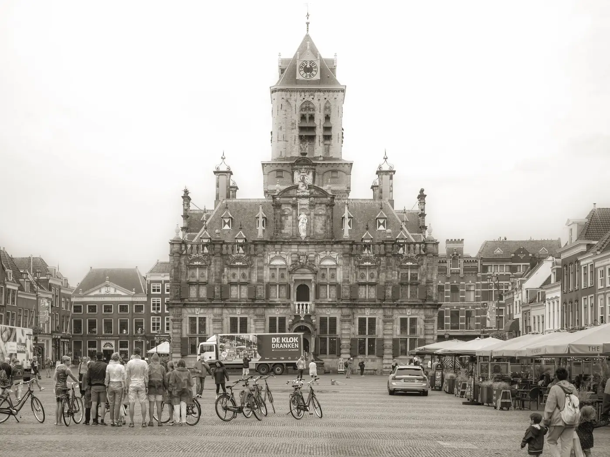

Serious strategy for the organisations doing the caring.
We are the first multi-city branch of 180 Degrees Consulting — the world's largest university-based consultancy. Student consultants from two great Dutch universities, working free of charge for non-profits and social enterprises.

What we are
Impact numbers, honestly sourced — coming with our first Impact Report
What we do
Digital Transformation
Putting the right tools and processes in place so a small team stops losing hours to manual work.
Marketing & Engagement
Reaching the audiences your mission serves, and the donors and volunteers who sustain it.
Financial Sustainability
Building funding models and cost structures that survive beyond the next grant cycle.
Market Assessment
Evidence on where demand, partners, and competition actually are before you commit resources.
Operational Efficiency
Finding where effort leaks out of your processes and redesigning them around your capacity.
Impact Measurement
Defining and tracking the numbers that prove your work works, for boards and funders.
Free doesn't mean unchecked
Every deliverable gets a senior-reviewer treatment before it reaches a client — an AI-assisted review our branch builds in-house and publishes in the open, checking evidence, logic, and clarity against professional consulting standards. We're the only student consultancy we know of that can show you its quality system.
- Evidence — every claim carries a verbatim quote, or the finding is dropped
- Logic & structure — does the argument survive a hostile board?
- Clarity — would a busy director understand each slide in seconds?
- Calibration — strong work earns a high score and few findings
The consultant does every rewrite. The reviewer only teaches.
No consulting experience required
Engineers, designers, economists wanted. Work directly with a non-profit's leadership for a semester — real client, real stakes, a trained team around you, and a board-ready deliverable you helped build when you leave.
What you learn: structured problem-solving, client communication, and AI-assisted consulting methods no other student club teaches.
Who we want: students from both campuses — TU Delft technical depth and Erasmus business acumen are equally the brand.
Application timeline & portal — opens with recruitment season
Two ways to partner
Recruiting partners get access to a self-selecting pool of ambitious students from two top universities — the engineers and economists who chose to spend their evenings doing pro bono strategy work.
Knowledge partners — trainers, mentors, and pro-bono experts — raise the bar of our client work and get a front seat on how the next generation consults.
Partner logos — awaiting our first partnerships
The executive board, 2026
Photos coming after our first team session.